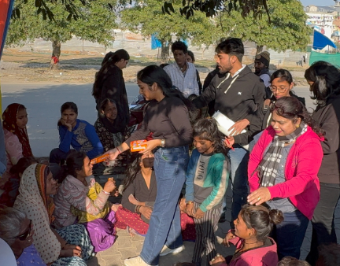

Community
Project Seva
Providing essential resources, food distribution and community support to the underprivileged across India.
Explore project →InAmigos Foundation is a Section 8 registered non-profit dedicated to education, social development, environmental care, animal welfare and women empowerment across India.

Founded on September 23, 2020, by Mr. Govind Shukla, InAmigos Foundation is a Section 8 NGO licensed by the Central Government of India, headquartered in Chhattisgarh.
Quality education for children in underserved communities through Bachpanshala.
Environmental action to protect our planet through Project Prakriti.
Six focused projects, each targeting a distinct social need — from education to ecology.
Providing essential resources, food distribution and community support to the underprivileged across India.
Explore project →Ensuring quality education and joyful learning experiences for underprivileged children across communities.
Explore project →Rescue, protection and care for animals in need — spreading compassion beyond humanity.
Explore project →Environmental awareness, conservation drives and sustainability programs for a greener tomorrow.
Explore project →Skill development and financial independence programs empowering women to soar to new heights.
Explore project →Enhancing employability and life skills for youth through structured training and development programs.
Explore project →Every action we take creates ripples of positive change across communities.
Thousands of meals distributed to families in need across India through our Seva initiative.
Bachpanshala has given hundreds of children access to quality learning environments and mentors.
Project Prakriti's plantation drives have helped restore green cover in multiple districts.
Project Udaan has trained hundreds of women with marketable skills and financial literacy.
Certified & Registered With